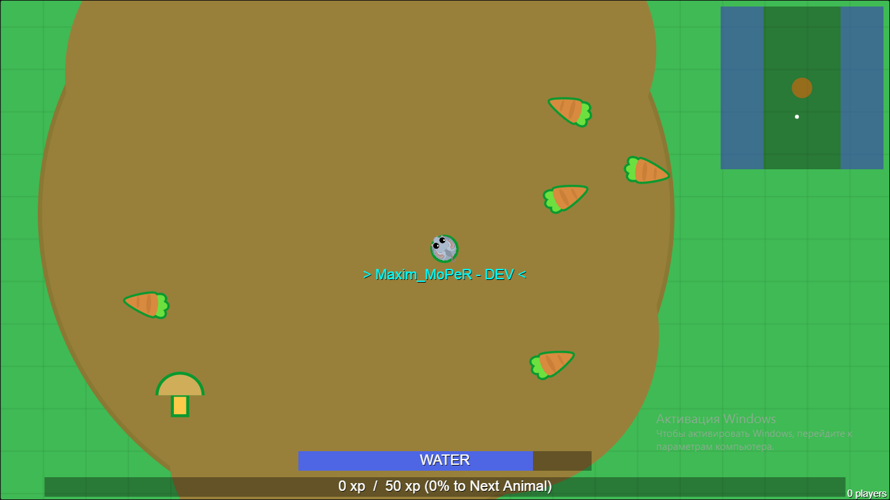
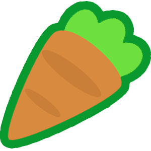
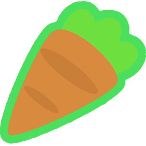
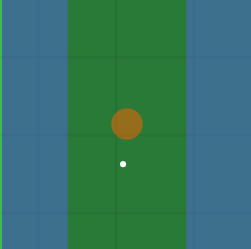
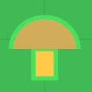

HOW TO PLAY ? (SANDBOX)
- To chat with other players, press Enter.
- Click on the top arrow to raise your animal (these arrows are often used instead of wasd).
- Click on the bottom arrow to lower your animal (these arrows are often used instead of wasd)
UPDATES
Jan 10: Fixed bugs
- -Fix: bug of transparent game on mobile device.
- -Fix: Again, a new logo for the menu. Higher quality and richer!
Jan 9: COLOSSAL UPDATE
- New: added a new dirt biome. The speed in mud is reduced by 3 times. Some animals are free to walk in mud! 
- New: Carrot. You can eat carrots from the rabbit level onwards. Gives a lot of XP.  
- Balance: Map size increased by 2x.
- Map now displays ocean biome and volcano. 
- New: mushroom design changed to mope.io mushroom design. 
- Buff: Berries give 1 to 4 xp random to any animal.
Top players are currently disabled! Reason: causes server lags.
Credits: abc64, Node13.